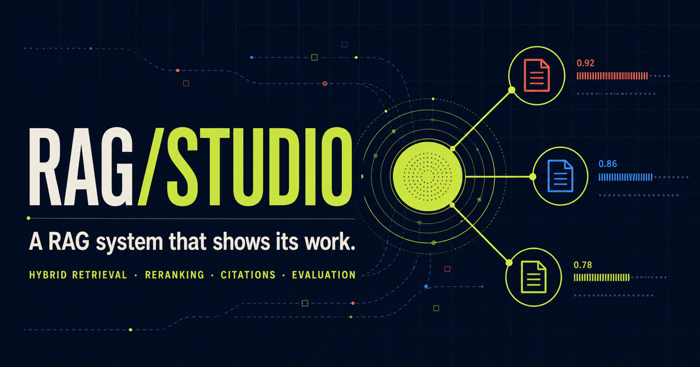
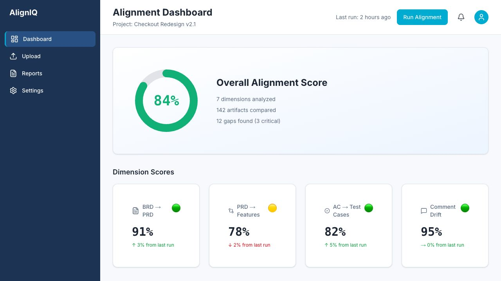
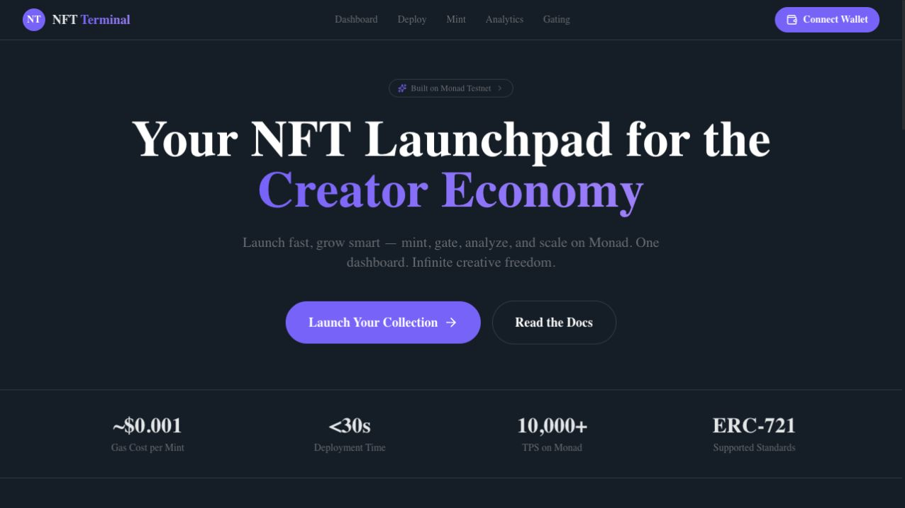
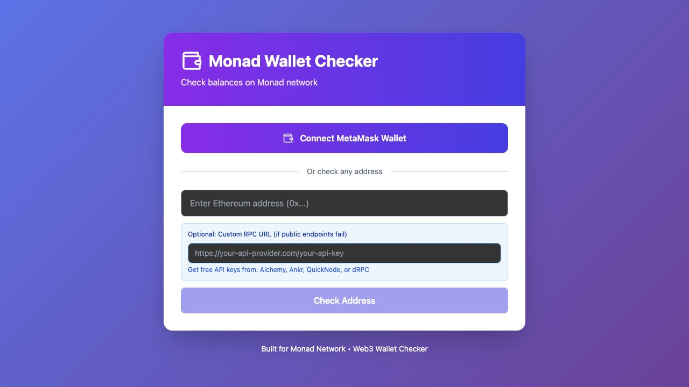

Five live products. Five different product muscles.
From evaluation-first retrieval and AI-assisted delivery alignment to Web3 utilities and a local-first productivity system—each project is live, inspectable, and built around a clear user decision.

Inspect the AI system ↗RAG Studio
An inspectable RAG workbench that exposes the evidence, scores, latency, citations, confidence gate, and evaluation behind every answer.
- Hybrid lexical and semantic retrieval fused with reciprocal-rank fusion.
- Evidence-aware reranking, claim-level citations, and confidence-gated abstention.
- Executable golden-set evaluation plus rewrite, score, token, candidate, and latency traces.

Open live product ↗AlignIQ
A requirements-alignment workspace designed to expose drift between business requirements, product requirements, delivery features, acceptance criteria, and test coverage.
- Evidence-backed gap cards connect findings to their source requirements.
- Upload, reporting, Azure DevOps configuration, and threshold workflows form a complete product shell.
- The public deployment uses demonstration data when its backend is unavailable.

Open live product ↗NFT Terminal
A no-code ERC-721 launchpad for creators to configure collections, deploy contracts, manage allowlists, inspect holder activity, and generate token-gating integrations.
- Collection deployment combines metadata, mint price, supply, and wallet limits.
- Merkle-tree allowlists, holder analytics, and token gating extend the workflow after launch.
- A deployed Solidity contract provides public proof on Monad Testnet.

Open live product ↗Monad Wallet Checker
A compact wallet utility that connects MetaMask or checks any compatible address, retrieves MON balances, and helps users work around public RPC limits with a custom endpoint.
- Automatically adds and switches MetaMask to the configured Monad network.
- Supports direct address lookup, refresh, copying, and block-explorer handoff.
- Keeps RPC configuration visible so rate-limit and provider issues are understandable.
Eisenhower Task Matrix
A focused task manager that converts urgency and importance into four clear action modes: do, schedule, delegate, or eliminate.
- Automatic quadrant assignment based on urgency and importance.
- Drag-and-drop organization with accessible mobile move controls.
- Completion tracking, due-date states, search, filters, edit, undo, and JSON backup.
Each product is open for inspection.
Try the live workflows, read the repositories, or explore the broader professional case studies behind the portfolio.